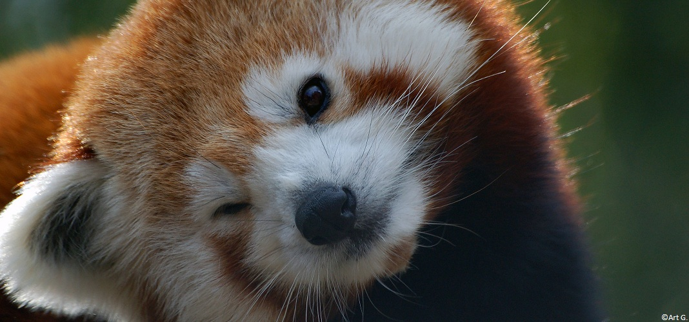

Ceci est une balise à utiliser en tête de page
Contenu principal de la page
Titre principal de la page (unique)
Titre de second degrès sur une article de la page sur les Pandas Roux
Titre de 3ème degrès de la page
Avec une section contenant une image externe de Panda Roux 
Titre de 3ème degrès de la page
Ainsi qu'un autre section traitement du même sujet et donc dans le même article avec une image interne 
Titre de second degrès sur une section de la page sur le point
Titre de 3ème degrès de la page
Avec une section contenant une image externe d'un point : 
Titre de 3ème degrès de la page
Ainsi qu'une autre section traitement du même sujet et donc dans le même article.